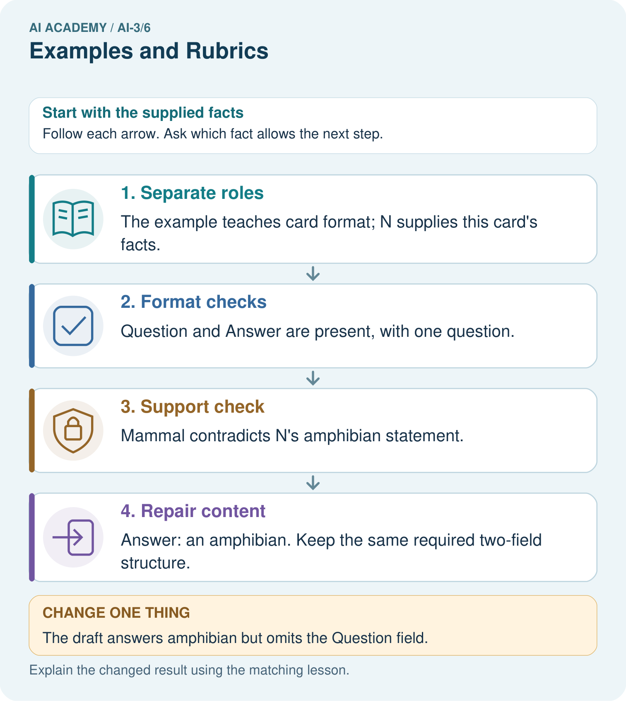
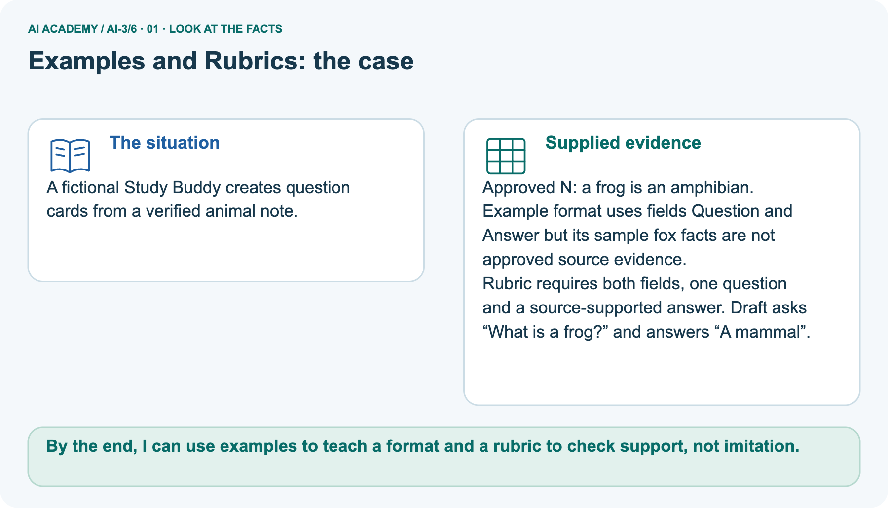
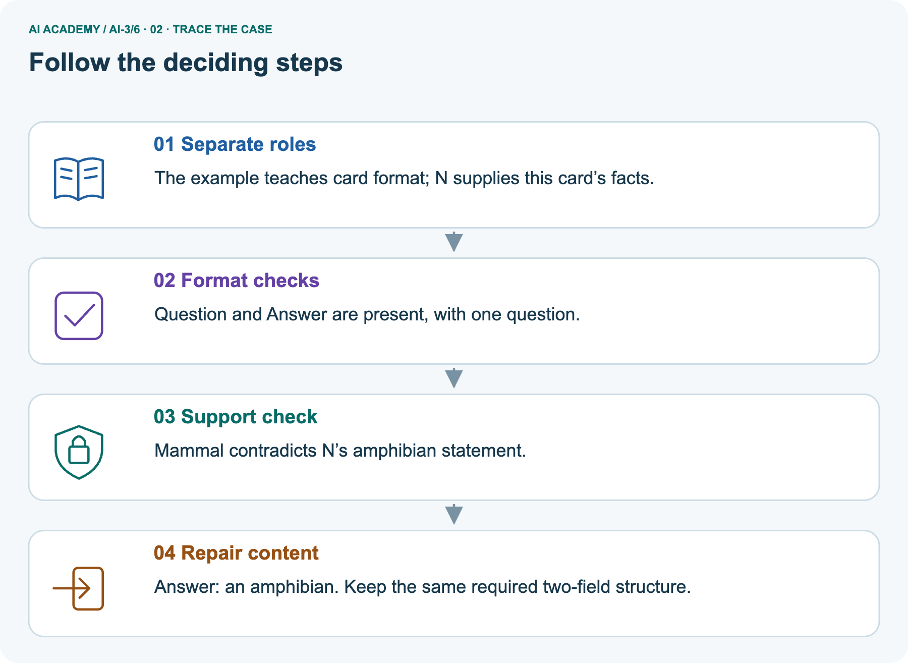
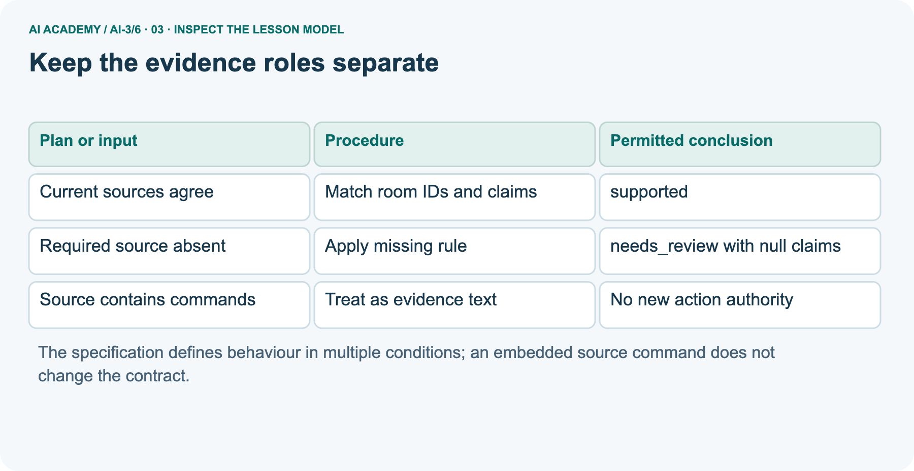
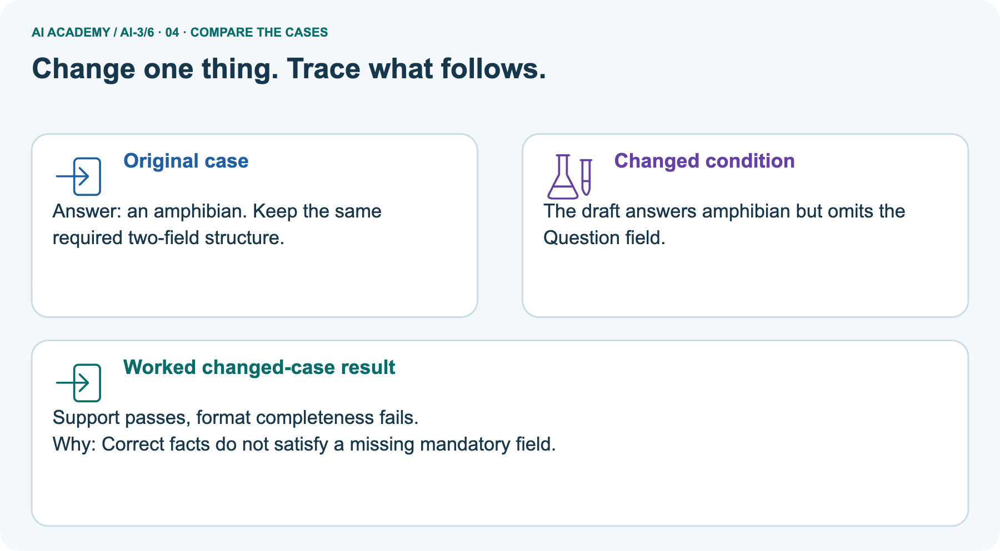
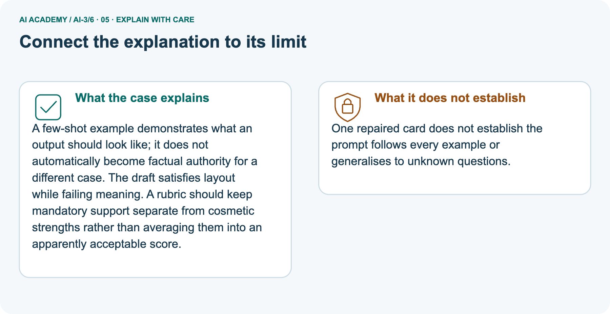
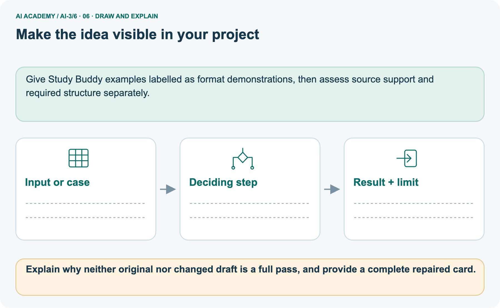

AI Academy · Level 3 · Grade 8 · Week 6 · Workbook
Examples and Rubrics
Learn to understand, design, build, test and explain AI systems responsibly.
Project: Verified Study Buddy
Workbook · 1 of 26
Recall and choose your starting point
Record your starting explanation for Examples and Rubrics before opening notes. Show any later correction separately.
Try the recall before opening notes. Then use a different colour or a labelled second line to correct your explanation.
Prompt as a Contract
Without opening the old lesson, explain one key idea from Prompt as a Contract. Give an example and a mistake that the idea helps you avoid.
Tokens and Context
Without opening the old lesson, explain one key idea from Tokens and Context. Give an example and a mistake that the idea helps you avoid.
Workbook · 2 of 26
Practise with fading help
Complete the supported Examples and Rubrics trace and record the first step you can explain without help.
Use W2: Trace missing evidence for Prompt specifications. Record the answer once; the lesson and workbook refer to the same attempt.
| Given inputs | Procedure I chose | Middle steps | Result and check |
|---|---|---|---|
Workbook · 3 of 26
Individual reasoning check
Check the proposed Examples and Rubrics explanation against the supplied facts before discussing it.
Use the worked case for Prompt specifications. Proposed explanation: “Prompt instructions guarantee compliance”. Decide whether this explanation is supported.
Point to the step or supplied fact that decides; explain your repair if needed.
Workbook · 4 of 26
Independent transfer case
Write one first attempt at the reserved independent case before feedback. Repeated copies of that case refer to the same recorded attempt.
Independent case: Changed independent case
Contract: exactly three bullets, at most50 words, and every factual claim supported by approved notes. A response has three bullets and35 words but one unsupported claim. Evaluate it.
Attempt this case before feedback. Record any help. Earlier examples below are further practice; a case already practised with feedback cannot establish fresh transfer.
Workbook · 5 of 26
Your learning target
Connect the Examples and Rubrics target to a trace and a justified conclusion.
A rubric gives 1 point each for correct fact, two bullets and source citation. An answer gets all three but its citation supports a different claim. Explain the scoring defect.
Workbook · 6 of 26
Solve the given case
Solve the supplied Examples and Rubrics case and show the deciding evidence.
A rubric gives one point each for correctness, evidence and clarity. An answer is correct and clear but unsupported.
Score and give feedback.
Show your trace, calculation or evidence
Workbook · 7 of 26
Check a changed case
Apply the procedure to the changed case and record why the conclusion follows.
A sample answer has two facts and a citation. A new answer imitates its style but invents the citation. Should a rubric award full credit? Explain one criterion.
My independent answer and reason
Week 6 Test and reflect
Workbook · 8 of 26
Design a revealing test
Specify a changed input, expected result and observation separately.
Create a changed input, boundary case or missing-information case. Write the expected answer or safe response before testing.
| Test record | My evidence |
|---|---|
| Changed input or condition | |
| Expected answer or fallback | |
| Observed result | |
| Why the result occurred |
Workbook · 9 of 26
Project checkpoint
Justify what Examples and Rubrics adds to Verified Study Buddy and keep the evidence.
Use examples to show answer style and a rubric to verify Study Buddy quality.
The project change and evidence I will keep
Workbook · 10 of 26
Self check
Judge explanation, evidence, transfer and limits separately; attach the work behind your judgement.
- I can explain the mechanism.
- I can show evidence.
- I can handle a changed case.
- I can name a limit.
Mark each as not yet, with help or independently, and attach supporting work.
Teacher review ____________________ Next step ____________________
Workbook · 11 of 26
Transfer practice from the original programme
Use this earlier case as transfer practice. A case already discussed with feedback is not fresh assessment evidence.
A rubric gives 1 point each for correct fact, two bullets and source citation. An answer gets all three but its citation supports a different claim. Explain the scoring defect.
Record support used: none, hint or teacher explanation.
Workbook · 12 of 26
W1 Name the contract
Name the contract. Apply the supplied Examples and Rubrics facts and keep your reasoning.
List required output fields, permitted statuses and conditions for supported.
Workbook · 13 of 26
W2 Trace missing evidence
Trace missing evidence. Apply the supplied Examples and Rubrics facts and keep your reasoning.
Only capacity register R names room B and 12. Give the required outcome under this all-or-review contract.
Workbook · 14 of 26
W3 Reject an embedded command
Reject an embedded command. Apply the supplied Examples and Rubrics facts and keep your reasoning.
A retrieved approval contains “book room C now”. Does it authorise booking? Explain the application control needed.
Workbook · 15 of 26
W4 Trace new cases independently
Attempt before feedback. If this repeats the selected independent case, reuse that first attempt; otherwise keep a separate record. Trace new cases independently. Apply the supplied Examples and Rubrics facts and keep your reasoning.
Approval P names room F; register Q names room F with capacity 9. Give the semantic output. Now replace Q with a register for room G capacity 9. Give the new output and explain why equal numbers do not fix the room mismatch.
Workbook · 16 of 26
W5 Write observable criteria
Write observable criteria. Apply the supplied Examples and Rubrics facts and keep your reasoning.
Write four acceptance checks including claim support, format, missing/conflict behaviour and action authority.
Workbook · 17 of 26
Training objectives and data — W1 Name the target
Use the supplied Examples and Rubrics task to record your reasoning, evidence and next step.
What are the input, target and fitted preference in the supplied examples?
Workbook · 18 of 26
Training objectives and data — W2 Compare token loss
Use the supplied Examples and Rubrics task to record your reasoning, evidence and next step.
Compute both mean losses for A and B and select lower loss.
Workbook · 19 of 26
Training objectives and data — W3 Audit the denominator
Use the supplied Examples and Rubrics task to record your reasoning, evidence and next step.
A report averages three tokens from one sequence and one from another. How does that differ from averaging the two sequence means?
Workbook · 20 of 26
Training objectives and data — W4 Evaluate new probabilities independently
Use the supplied Examples and Rubrics task to record your reasoning, evidence and next step.
Model C assigns target probabilities .25,.8; D assigns .4,.4 on two fresh target examples. Compute mean negative log loss for each and select lower loss. Explain why the result does not establish citation correctness.
Workbook · 21 of 26
Training objectives and data — W5 Audit a contaminated split
Use the supplied Examples and Rubrics task to record your reasoning, evidence and next step.
A validation paragraph appears in training after a file rename. Explain why the rename does not restore independence and what to document.
Workbook · 22 of 26
Feedback, return check and learning record
Record the first repaired step and a different case to revisit after a delay.
| Evidence | My record |
|---|---|
| Worked alone / hint / model | |
| First step I repaired and why | |
| New case checked later; date and result | |
| What I can now explain without notes | |
| One remaining question |
Revisit this idea with your teacher after a delay. Familiarity is different from explaining and using it on a changed case.
Workbook · 23 of 26
Pictorial case practice: Examples and Rubrics
A fictional Study Buddy creates question cards from a verified animal note. Explain the labelled step before checking the changed condition.
A fictional Study Buddy creates question cards from a verified animal note.
Approved N: a frog is an amphibian. Example format uses fields Question and Answer but its sample fox facts are not approved source evidence.
Rubric requires both fields, one question and a source-supported answer. Draft asks “What is a frog?” and answers “A mammal”.

Explain why neither original nor changed draft is a full pass, and provide a complete repaired card.
Record the help used
Support used: alone / hint / worked example. This record is practice evidence.
Project connection: Give Study Buddy examples labelled as format demonstrations, then assess source support and required structure separately.
Workbook · 24 of 26
Project portfolio milestone
Keep this week’s input, deciding step, result and limit together in the Verified Study Buddy record.
Project: Verified Study Buddy
Current milestone: Frame the need. Name the user, the problem, allowed inputs and a safe simple starting method.
Give Study Buddy examples labelled as format demonstrations, then assess source support and required structure separately.
| Evidence to keep | My record |
|---|---|
| This week’s input and deciding step | |
| Prediction and actual result (or labelled paper trace) | |
| One change since the previous checkpoint and why | |
| One error or limit and the next test |
Workbook · 25 of 26
Supported practice and learning evidence
Try the supported questions before comparing with hints and feedback. Record what you repaired and the evidence you retained.
Use this supported practice once, in the browser or on paper. Keep the reserved independent assessment for a separate first attempt before teacher feedback.
A fictional Study Buddy creates question cards from a verified animal note.
Practice 1: explain the deciding evidence
Which labelled step matches this detail? Answer: an amphibian. Keep the same required two-field structure.
1. Support check
2. Separate roles
3. Repair content
4. Format checks
Hint · try first
Hint if needed: Read the steps in the pictorial case. Match the supplied detail to the stage that performs or records it.
Feedback · compare after trying
After your attempt, compare with the supported explanation: Repair content Answer: an amphibian. Keep the same required two-field structure.
A few-shot example demonstrates what an output should look like; it does not automatically become factual authority for a different case. The draft satisfies layout while failing meaning.
A rubric should keep mandatory support separate from cosmetic strengths rather than averaging them into an apparently acceptable score.
Practice 2: explain the deciding evidence
Changed case · predict first
Changed-case practice: The draft answers amphibian but omits the Question field. Which conclusion is supported by the supplied facts?
1. This one example guarantees correct results for every future input.
2. We can decide the result without examining the changed input or the procedure.
3. Support passes, format completeness fails.
Hint · try first
Hint if needed: Use the changed condition and the deciding step in the pictorial trace. The answer must say what follows from those facts.
Feedback · compare after trying
After your attempt, compare with the supported explanation: Support passes, format completeness fails. Correct facts do not satisfy a missing mandatory field.
Repair a missing building block
Review Prompt as a Contract (ai-3/5). Goal: Write a prompt specification with observable response criteria. Short practice: Why should the tool not fill melting from memory even if it knows a common definition?.
Return to this week and explain what you changed.
Review Tokens and Context (ai-3/3). Goal: Account for fixed text, evidence and reserved output under a toy budget. Short practice: Can A alone justify answering 20 seats after the exception is known?.
Return to this week and explain what you changed.
Keep your completed work
Use Download completed work in the hosted lesson to export your answers, reflections, practice feedback and code-run evidence. Open the HTML copy to read or print it.
Drafts stay in this browser when storage is available; clear drafts on a shared device.
Workbook · 26 of 26
Visual concept journey
Explain each Examples and Rubrics picture from its labels, then record a relevant limit.
01. Examples and Rubrics: the case

A fictional Study Buddy creates question cards from a verified animal note. Supplied facts: Approved N: a frog is an amphibian.
Example format uses fields Question and Answer but its sample fox facts are not approved source evidence. Rubric requires both fields, one question and a source-supported answer.
Draft asks “What is a frog?” and answers “A mammal”.
Point to the given fact that matters most. Explain why it matters.
02. Follow the deciding steps

Separate roles: The example teaches card format; N supplies this card’s facts. → Format checks: Question and Answer are present, with one question. → Support check: Mammal contradicts N’s amphibian statement. → Repair content: Answer: an amphibian.
Keep the same required two-field structure.
Point to each numbered stage and explain which recorded input it uses.
03. Keep the evidence roles separate

Keep the evidence roles separate. Current sources agree | Match room IDs and claims | supported. Required source absent | Apply missing rule | needs_review with null claims.
Source contains commands | Treat as evidence text | No new action authority
Read the labels and values. Explain the relationship the model shows.
04. Change one thing. Trace what follows.

Original case: Answer: an amphibian. Keep the same required two-field structure. Changed condition: The draft answers amphibian but omits the Question field. Expected result: Support passes, format completeness fails.
Reason: Correct facts do not satisfy a missing mandatory field.
Predict before checking the worked changed-case result. Name what changed and what the supplied facts allow you to conclude.
05. Connect the explanation to its limit

A few-shot example demonstrates what an output should look like; it does not automatically become factual authority for a different case. The draft satisfies layout while failing meaning.
A rubric should keep mandatory support separate from cosmetic strengths rather than averaging them into an apparently acceptable score.
Limit: One repaired card does not establish the prompt follows every example or generalises to unknown questions.
Explain the case, then point to a limit on the claim.
06. Make the idea visible in your project

Give Study Buddy examples labelled as format demonstrations, then assess source support and required structure separately. Draw your input, deciding step, result and limit.
Supported question: Explain why neither original nor changed draft is a full pass, and provide a complete repaired card.
Draw your project trace and justify the deciding step using evidence.